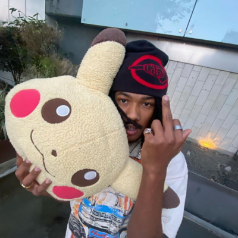

Who is Bby Yoshando ?
Bby Yoshando (Josh) was born and raised in the USA by two Dominican American parents. He met Luis Mora in the early days when he was starting his Youtube Career. Bby Yoshando hasn’t revealed what he did for a living before or after he met Luis. He is a close friend to Luis and often shows up in his Youtube videos. When Syndicate Studios was launched Bby Yoshando saw it as he chance to start making music. A dream he had for a while but was too scared to try. With the help of his friends he was able to start making music with his first song Dontsaveher back in 2020. After seeing the success of Luis streetwear business Erased Project. He decided to start his own store SARIAH World Wide. Where he made clothes that matched the Aesthetic and feel he was more into. He now has 22k monthly listeners, with his most popular song Retro Feelings having over 1 million plays.
